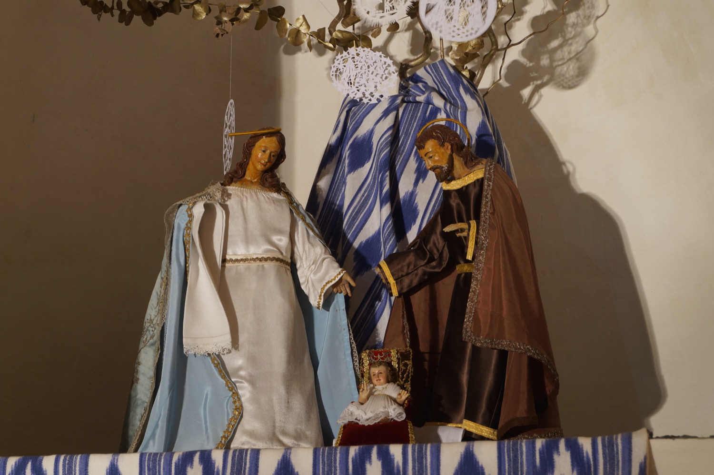

Nacimiento restaurado hace pocos años y formado por tres figuras: la Virgen María, san José y el Niño Jesús. San José lleva en la mano derecha uno de sus atributos más característicos: una vara florida, que recuerda la tradición según la cual, cuando se buscaba un pretendiente para María, se pidió a los aspirantes que dejaran sus varas en el templo, y solo la de José floreció milagrosamente, señal de que era el elegido por Dios. La Virgen viste como una Inmaculada, con túnica blanca y manto azul, símbolos de pureza y celestialidad, respectivamente.